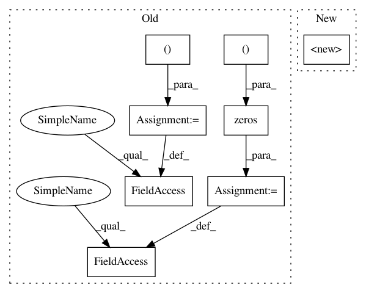

48f991768b7274655b7cbc0e6e6124dac5873cdd,mushroom_rl/approximators/parametric/cmac.py,CMAC,__init__,#CMAC#Any#Any#Any#,13
Before Change
if weights is not None:
assert weights.size == output_dim * self._phi.size
self._w = weights.reshape((output_dim, -1))
else:
self._w = np.zeros((output_dim, self._phi.size))
self._add_save_attr(_w="numpy", _phi="pickle")
def fit(self, x, y, **fit_params):
After Change
self._phi = Features(tilings=tiles)
self._n = len(tiles)
super().__init__(weights=weights, input_shape=(self._phi.size,), output_shape=output_shape)
self._add_save_attr(_phi="pickle")
def fit(self, x, y, **fit_params):
In pattern: SUPERPATTERN
Frequency: 3
Non-data size: 8
Instances
Project Name: AIRLab-POLIMI/mushroom
Commit Name: 48f991768b7274655b7cbc0e6e6124dac5873cdd
Time: 2020-06-08
Author: boris.ilpossente@hotmail.it
File Name: mushroom_rl/approximators/parametric/cmac.py
Class Name: CMAC
Method Name: __init__
Project Name: geomstats/geomstats
Commit Name: 21445b6052f3b1ce1a1210ff6d402dd0ad71be0a
Time: 2020-11-17
Author: nicolas.guigui@inria.fr
File Name: geomstats/geometry/special_euclidean.py
Class Name: _SpecialEuclideanMatrices
Method Name: __init__
Project Name: openai/baselines
Commit Name: 69f25c6028d71e23a7b267b0e1071ad216290f91
Time: 2018-05-01
Author: peterzhokhoff@gmail.com
File Name: baselines/a2c/a2c.py
Class Name: Runner
Method Name: __init__